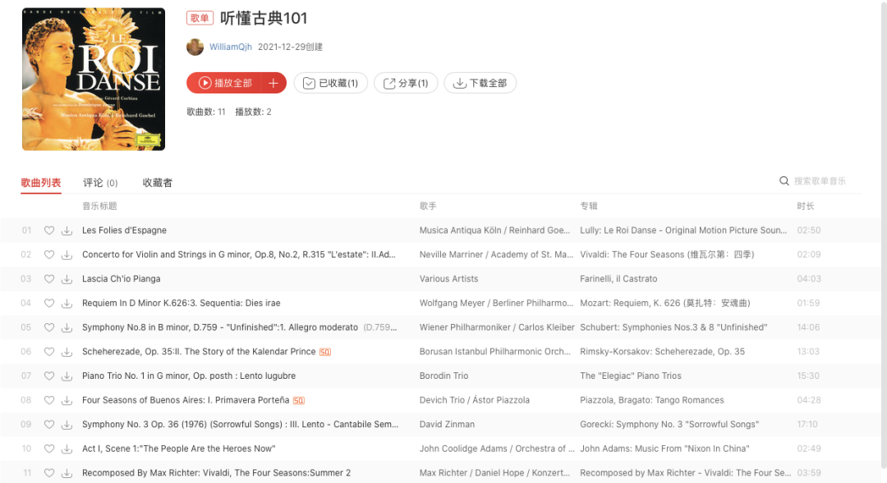
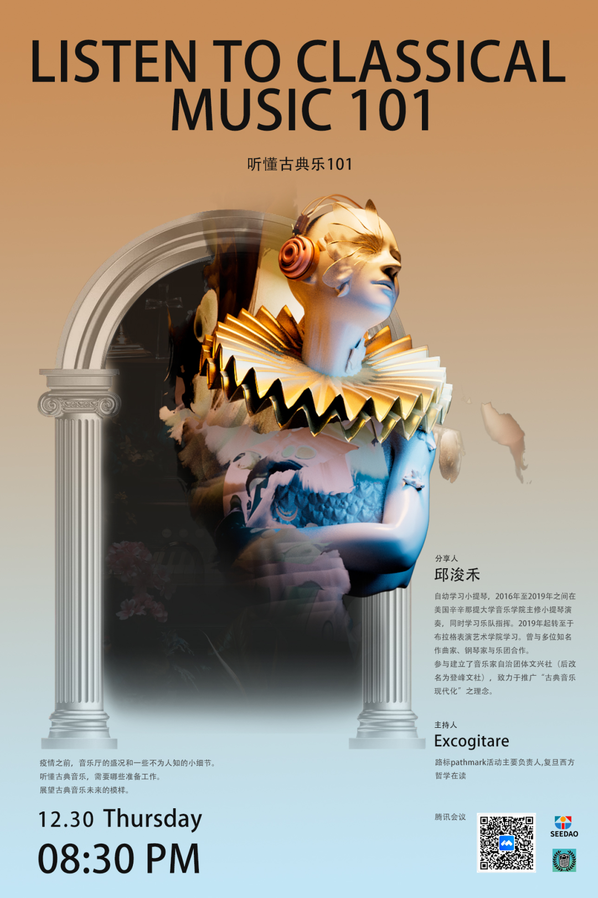

艺术家的情感浪漫又细腻，他们除了用嘴来表达，还可以是手中的画笔、雕刻刀，或者是丝竹管弦。
不论手中的乐器有多么复杂多样，他们总能借助一个个跃动的音符，以最纯粹最抽象的方式感动我们。
不论是贝多芬荡气回肠的命运交响，莫扎特辗转缠绵的婚礼颂歌，还是肖斯塔科维奇华丽高贵的舞步旋律，都凝聚成为了多少代人共同的记忆。
在历史的重大事件中，上至攻占巴士底狱隆隆的炮声，中达1848年响彻欧洲愤怒的呐喊，下至保卫列宁格勒坚定不移的呼告，也从未缺席过古典音乐激动人心的交响。
然而不知从什么时候开始，古典音乐同大众渐渐疏远，人们喜欢的节奏鲜明的摇滚，是直白简单的流行，欣赏古典乐似乎变成了少数人的爱好，一度创造历史的精巧音乐设计，现在也变成了阻碍更多人接触欣赏的门槛。
虽然如此，我们始终相信，真正好的艺术作品是能够被理解和传承的，重要的是能使其同时代结合。为此，我们特别请到了“古典音乐现代化”概念的提出者邱浚禾先生，和我们一道分享关于古典音乐的种种：
1. 听懂古典音乐，需要哪些准备工作？届时邱老师不仅会带领大家一起欣赏古典音乐，还有独家推荐歌单分享给大家~

歌单链接：
https://music.163.com/#/playlist?id=7209151311&userid=294264246&creatorId=294264246
2. 疫情之前，音乐厅的盛况和一些不为人知的小细节
3. 展望古典音乐未来的模样
12月30日星期四，晚上8：30，我们不见不散~
